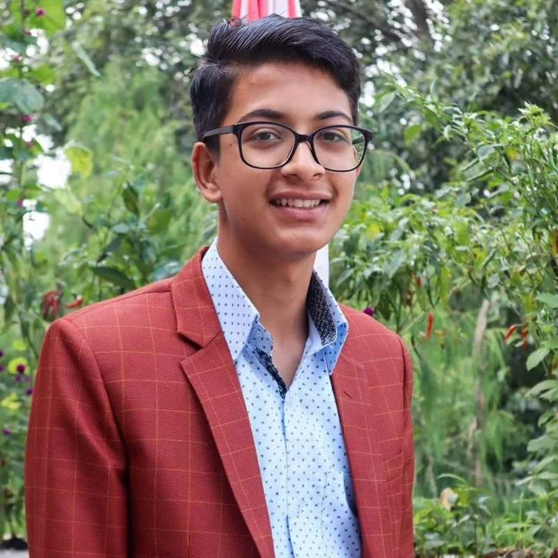

Nirjal Bhurtel
Welcome to Kathmandu University Computer Club. Our heartfelt goal is to provide a platform for students to advance their technical and soft skills, grow their confidence, and bridge the gap between academia and industry. KUCC fulfills its mission by conducting several events, talk shows, hackathons, workshops, and much more bringing together everyone under the same roof. We are proud to have a community of talented students, alumni, faculty, staff, and friends who care about this club like no other. This is what makes our community diverse and inclusive. Let’s all strive to live up to our motto “KUCC for all since 1997”